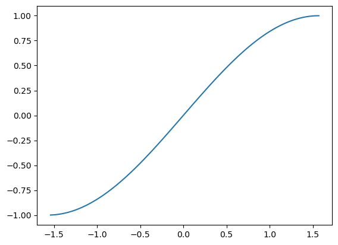

require 'matplotlib/iruby'
Matplotlib::IRuby.activate[:inline, "module://matplotlib_rb.backend_inline"]このページでは matplotlib.rb で生成される図に対するクロスリファレンスが、 Quarto を用いることで自動的に得られることを示します。
まず matplotlib.rb の画像出力を iruby notebook でインタラクティブに確認するための、下記コードセルを実行します。
[:inline, "module://matplotlib_rb.backend_inline"]次に、「図」用クロスリファレンスのためのコードセルの記述方法を示します。 何はともあれ下記のセルを実行しましょう。
ウェブサイトでは Jupyter のコードセル内の Quarto 用のコメントが表示されなかったため、 Markdown のコードブロックと Jupyter のコードセルを併記します。 ご注意ください。
#| label: fig-plot
#| fig-cap: "matplotlib.rbを用いたプロット"
require 'matplotlib/pyplot'
plt = Matplotlib::Pyplot
xs = [*1..100].map {|x| (x - 50) * Math::PI / 100.0 }
ys = xs.map {|x| Math.sin(x) }
plt.plot(xs, ys)
plt.show()require 'matplotlib/pyplot'
plt = Matplotlib::Pyplot
xs = [*1..100].map {|x| (x - 50) * Math::PI / 100.0 }
ys = xs.map {|x| Math.sin(x) }
plt.plot(xs, ys)
plt.show()
sinカーブを描く図がノートブックの出力セルに得られたはずです。 そして先のコードセルの冒頭のコメント2行
#| label: fig-plot
#| fig-cap: "matplotlib.rbを用いたプロット"は、この図に対してクロスリファレンスを作るための記法です。
#| label: fig-XXX のようなコメントを図を出力するコードセルに書くと、 その図に対するラベル fig-XXX が設定されます。XXXは任意の文字列です。
そして、#| fig-cap: "YYY" のようなコメントを図を出力するコードセルに書くと、 その図に対するキャプションが (その ipynb を Quarto に与えた出力結果では) 得られます。
それではセクションや数式に対するクロスリファレンスと同様、 図に対するクロスリファレンスを参照してみましょう。
参照する方法は「@fig-XXX を Markdown セル中に書く」です。
ではこのノートブックの quarto render の結果で Figure 1 がどうなっているか見てみましょう。
ノートブックでは @fig-plot と表示されていが箇所が PDF 等では図へのクロスリファレンスにはなっているはずです。
図表のキャプションのタイトル冒頭の文字列はデフォルトでは Figure 数字インデックス: と Table 数字インデックス: になっていますが、Figure や Table を任意の日本語に置き換えることもできます。
それを行ったのがこのノートブックの冒頭の、Raw セル (Raw セルは ipynb が GitHub 等でレンダリングされる結果には表示されないのでご注意ください) になります。
その Raw セルを下記に Markdown として再掲します。
---
title: "コード実行により得られる図表に対するクロスリファレンス"
crossref:
fig-title: 図 # (default is "Figure")
tbl-title: 表 # (default is "Table")
format:
pdf:
toc: true
number-sections: true
documentclass: bxjsarticle
classoption:
- pandoc
- ja=standard
- jafont=haranoaji
pdf-engine: lualatex
jupyter: ruby
---ご推測の通り、
crossref:
fig-title: 図 # (default is "Figure")
tbl-title: 表 # (default is "Table")が前述のカスタマイズを行っている箇所になります。
ではキャプションの日本語カスタマイズだけではなく、クロスリファレンス側での日本語カスタマイズも行ってみましょう。 それは [図 @fig-plot] を Markdown セルに書くことで実現できます。
では 図 1 を参照してみましょう。
どうでしょう？ このノートブックを Quarto への入力として与え、出力として得られる PDF 等では上記がクロスリファレンスに置き換えられているはずです。
図と同様、表に対してもクロスリファレンスを得ることができます。
図ではラベルやキャプションで fig- と書いていた箇所を tbl- と置き換えることでそれが実現できます。
と言っても「“表” はどういったコードセルによって得られるのか？」と思われるでしょう。
それは「Markdown のテーブル記法」を mime type を markdown として出力することによって実現できます。
まずはとてもシンプルな例を見てみましょう。 下記のコードセルがそれになります。
| TH1 | TH2 |
|---|---|
| TD | TD |
では @tbl-planets を下記のように Markdown セルに書いたこの ipynb を quarto render コマンドに与えて得られる PDF 等を見てみましょう。
Table 1 はどうなっているでしょうか？
red_amber は Ruby における pandas と言える gem です。
下記では red_amber を用いて、より実践的な 表作成用 Ruby コードセルを示します。
require 'terminal-table'
require 'red_amber'
include RedAmber
uri = URI('https://vincentarelbundock.github.io/Rdatasets/csv/dplyr/starwars.csv')
starwars = DataFrame.load(uri)
table = Terminal::Table.new do |t|
t.headings = starwars.keys.map { |x| x.to_s }
t.rows = starwars.head.to_a
t.style = { :border_top => false, :border_bottom => false }
end
table.style = { :border => :markdown}
IRuby.convert(table.render, mime: "text/markdown")| unnamed1 | name | height | mass | hair_color | skin_color | eye_color | birth_year | sex | gender | homeworld | species |
|---|---|---|---|---|---|---|---|---|---|---|---|
| 1 | Luke Skywalker | 172 | 77.0 | blond | fair | blue | 19.0 | male | masculine | Tatooine | Human |
| 2 | C-3PO | 167 | 75.0 | NA | gold | yellow | 112.0 | none | masculine | Tatooine | Droid |
| 3 | R2-D2 | 96 | 32.0 | NA | white, blue | red | 33.0 | none | masculine | Naboo | Droid |
| 4 | Darth Vader | 202 | 136.0 | none | white | yellow | 41.9 | male | masculine | Tatooine | Human |
| 5 | Leia Organa | 150 | 49.0 | brown | light | brown | 19.0 | female | feminine | Alderaan | Human |
では [表 @tbl-starwars] によってクロスリファレンスを得てみましょう。
スターウォーズの研究は 表 2 を参照。
いかがでしょうか？ この ipynb を quarto render した結果得られる PDF 等では [表 @tbl-starwars] がクロスリファレンスに置き換えられているはずです。
iruby noteboook を quarto render した結果得られる PDF 等で
のすべてに対してクロスリファレンスが自動生成されることが確認できました。
特に図と表に対してはコードセルと関連付けたクロスリファレンスが Python や R だけでなく Ruby においても可能であることを実証しました。